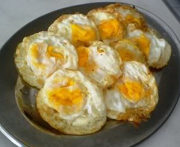

CARA MEMBUAT TELUR CEPLOK

Cara masak telur paling mudah namun dapat divariasikan dengan mudah, namun dalam artikel ini, kita akan membahas membuat telur ceplok paling sederhana
Bahan dan alat yang diperlukan
- 1x Panci
- 1x telur
- Minyak goreng
- 1x Sendok
- 1x Kompor yang terpasang pada tabung gas yang berisi
- Korek api
Langkah - Langkah
- Nyalakan kompor kemudian atur kompor ke api paling kecil
- Tempatkan panci pada kompor
- Masukan 1 sendok minyak goreng ke dalam panci kemudian ratakan minyak goreng pada permukaan panci
- Pecahkan telur dan tuang isinya kedalam panci
- Tunggu selama 5 menit
- Balik telurnya dengan sendok
- Tunggu 3 menit
- Matikan kompor
- Telur siap dimakan, pindahkan ke piring atau langsung makan di pancinya